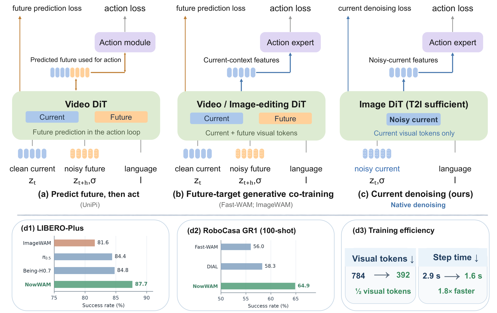
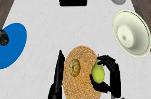
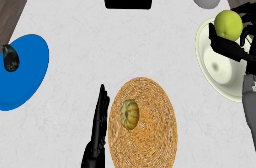
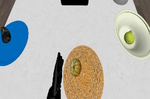
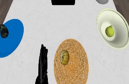

OOD control / LIBERO-Plus
87.7%
NowWAM · FLUX.2-Klein
ImageWAM 81.6%+6.1 pts
Born to generate. Adapted to act.
Denoising as Generative Adaptation for Robot Control
The future is the target.
The representation is the point.

The idea in three steps
01 / Previous work
Training · future-target co-training




A future target gives a pretrained generative model a familiar way to adapt its representations for control.
02 / Change the target
Change the time, not the task
83.80≈83.70
Past and future targets perform comparably. The evidence points beyond forward prediction alone.
03 / NowWAM
Same current · different noise levels
Sample → Train
Denoising + Action learning
NowWAM couples denoising and action learning on the current stream. No separate target needed.
Result
OOD control / LIBERO-Plus
NowWAM · FLUX.2-Klein
Training speed
Faster steps. Half the visual tokens.
Text-to-image backbone
Z-Image · LIBERO-Plus
48.3 → 70.5%
77.7 → 88.6%
98.4%
64.9%
Citation
@article{wang2026nowwam,
title = {Beyond Future Prediction: Denoising as Generative Adaptation for Robot Control},
author = {Wang, Zanyi and Lei, Yuheng and Jiang, Dengyang and Luo, Ping and Wang, Mengdi and Liang, Zhixuan and Liu, Shilong},
journal = {arXiv preprint arXiv:2609.28339},
year = {2026}
}